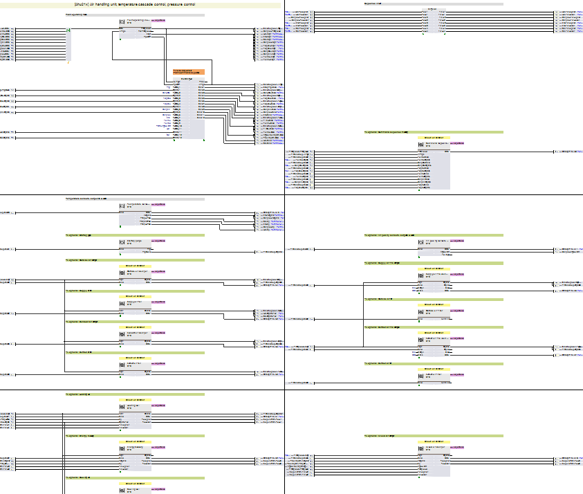
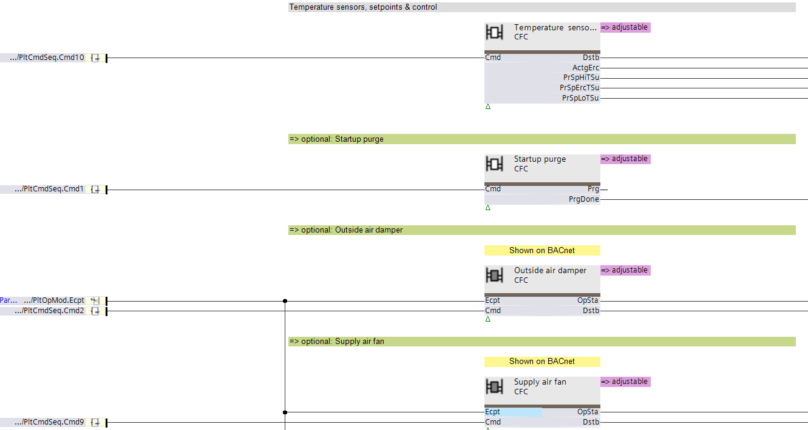
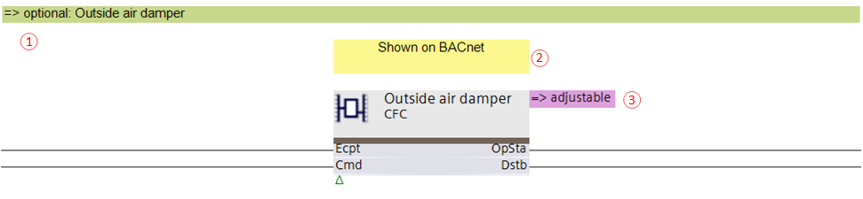
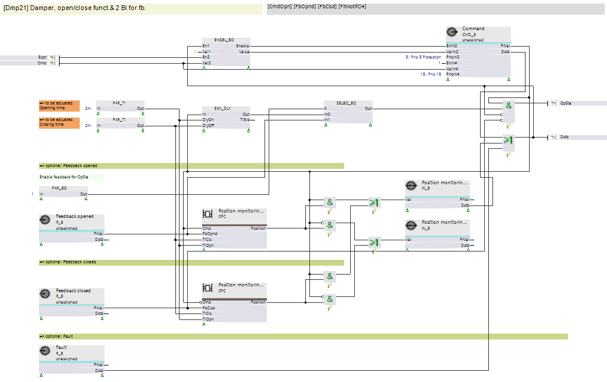
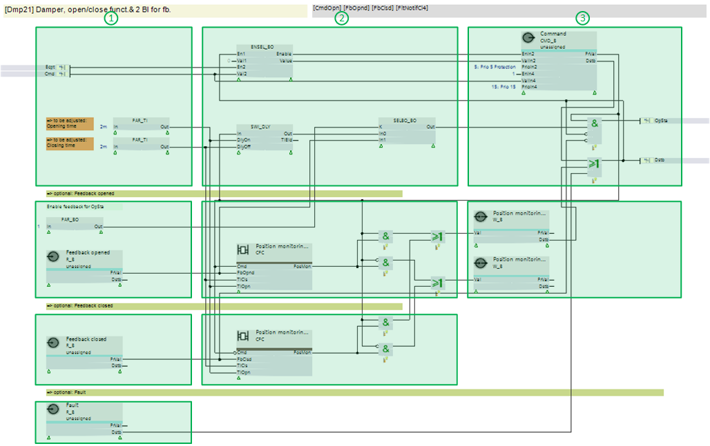
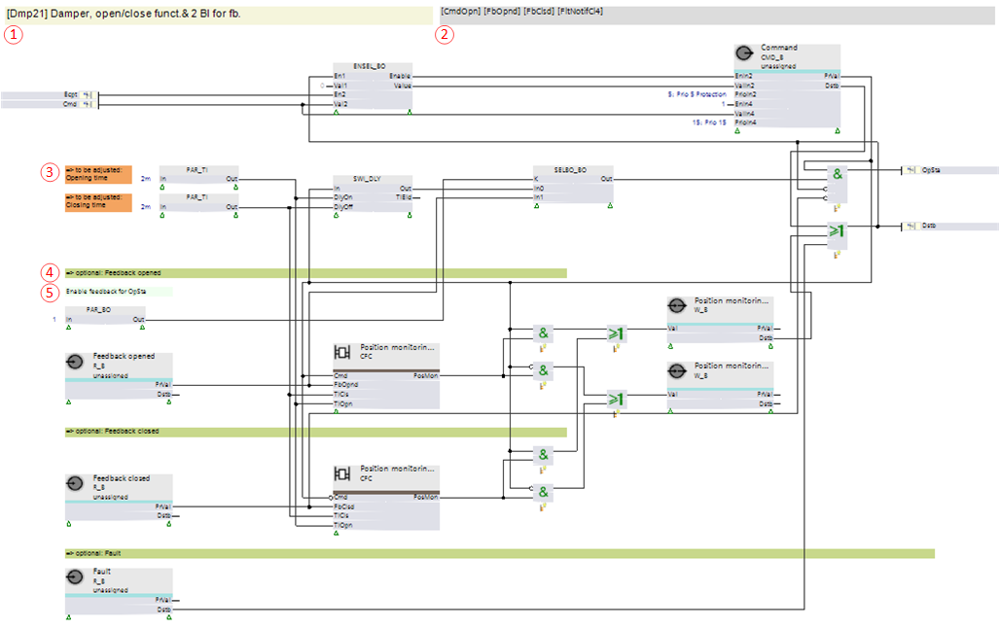

嵌套植物的描述和结构
这Programming编辑器有一个图形编辑器来对工厂进行编程。
输入块、输出块和程序逻辑排列在嵌套图表中，以提高概览。
Plant depiction in the Programming editor
工厂示例 Ahu21x：

Arranging plant components in nested charts
各种设备组件，包括加热盘管、风扇或空气阻尼器，都排列在嵌套图表中。每个嵌套图表条包括输入块、输出块以及该工厂组件所需的程序逻辑。
作为 Ahu21x 一部分的嵌套图表“外部空气风门”示例：

Textual elements around the nested chart
嵌套图表周围有各种文本框。

① 文本框“=>可选：”
此文本框下方的功能（直到下一个绿色文本框）是可选的，属于给定选项。该选项的描述位于文本框中。
② 文本框“显示于BACnet”
表示自动为此图表创建文件夹。
③ 文本框“=>可调整”
表明，Function configurator可以启动，该程序块在库中有替代项，并且 /or 程序块内的选项可用。
Content of the nested chart
嵌套图表“外部空气风门”（Dmp21 类型）的内容示例：

Arranging chart components in chart strips
各种图表组件排列在水平图表条中。每个图表条包括输入块和输出块以及该工厂组件所需的程序逻辑。

① 输入块
② 程序逻辑（功能块和嵌套图表）
③ 输出块
Textual elements in the nested chart

① 图表名称
显示图表的节点子类型（= 功能类型 = 图形标签）及其描述。
② 该图表的预定义 I/Os 列表
显示作为输入和输出所需的预定义 I/Os。
您可以复制并粘贴此列表作为库过滤器的过滤条件，以获得所需的预定义 I/Os.
③ 文本框“待调整”
表明该引脚的值是一个配置参数，例如风门的打开时间。
④ 文本框“=>可选：”
此文本框下方的功能（直到下一个绿色文本框）是可选的，属于给定选项。该选项的描述位于文本框中。
⑤ 功能注释文本框
提供有关功能块或一组块的用途的更多信息。